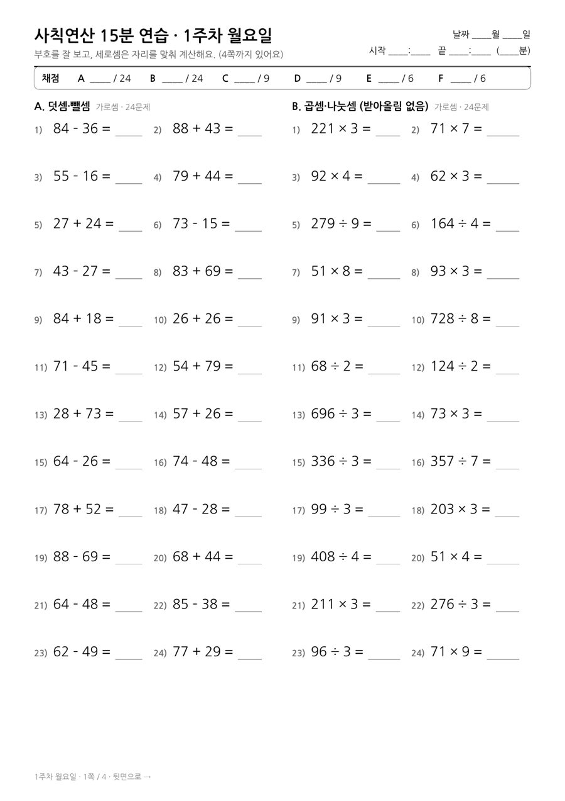
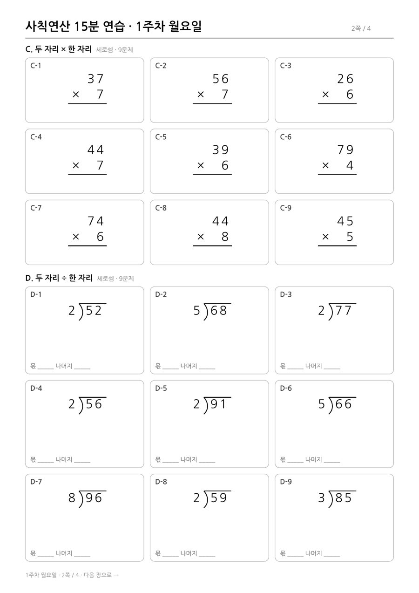
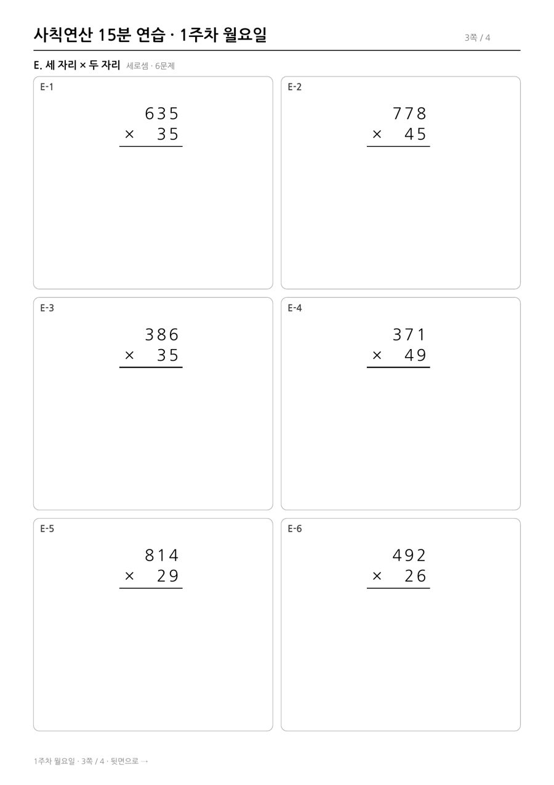
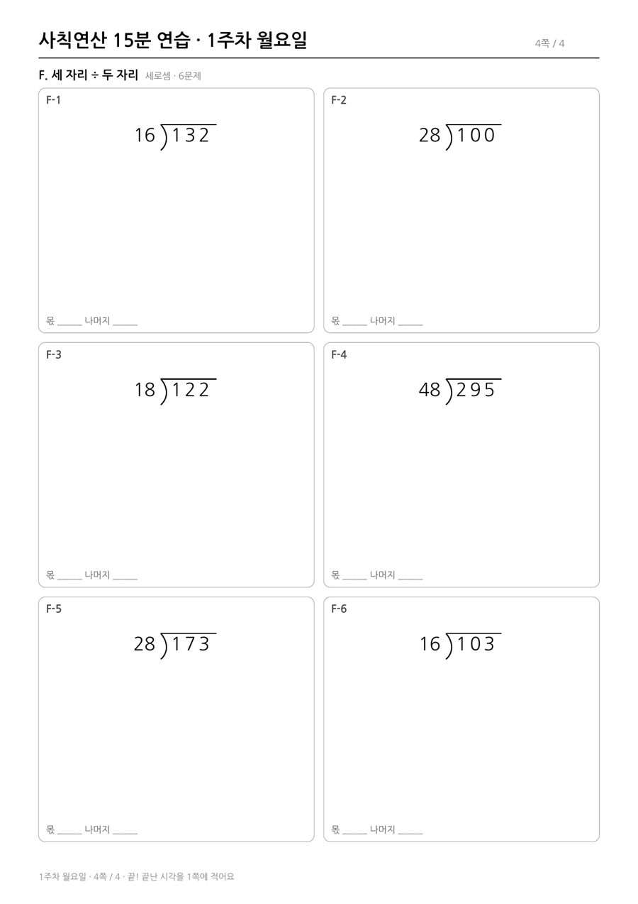

평일 10일 동안 매일 푸는 연산 학습지예요. 하루 분량은 A4 4쪽이라 양면으로 인쇄하면 종이 2장이에요.
| 유형 | 형식 | 문제 수 | 예시 | |
|---|---|---|---|---|
| A | 덧셈·뺄셈 (받아올림·받아내림 있는 두 자리 수) | 가로셈 | 24 | 47 + 38 |
| B | 곱셈·나눗셈 (받아올림 없음) | 가로셈 | 24 | 41 × 7, 287 ÷ 7 |
| C | 두 자리 × 한 자리 (일의 자리 받아올림) | 세로셈 | 9 | 47 × 6 |
| D | 두 자리 ÷ 한 자리 (받아내림, 나머지) | 세로셈 | 9 | 77 ÷ 3 |
| E | 세 자리 × 두 자리 (모든 줄에 받아올림) | 세로셈 | 6 | 635 × 35 |
| F | 세 자리 ÷ 두 자리 (몫 어림, 받아내림) | 세로셈 | 6 | 295 ÷ 48 |
15분보다 훨씬 빨리 끝나고 거의 다 맞힌다면 세로셈(E·F)을 더 어려운 단계로, 20분이 넘게 걸린다면 가로셈(A·B)부터 속도를 붙이는 게 좋아요.



